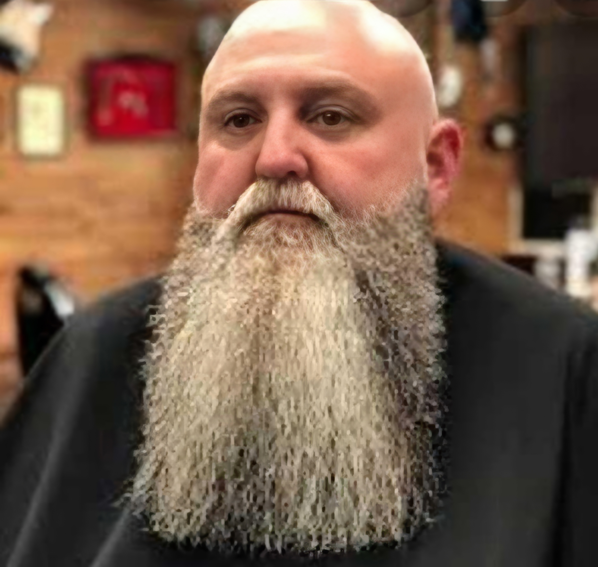

Chuppy
Alquimista de palabras oscuras
Sobre Chuppy
Chuppy es parte fundamental de Fantatrías, aportando su voz única al taller con historias que exploran los límites de la imaginación.
Géneros favoritos
Histórico, Fantasía, Ciencia ficción
En el taller desde
2021
Obra destacada
Próximamente...
Objetivos 2025-2026
Terminar 10 capítulos del "Proyecto Fantasía" antes del 31 de diciembre, o completar la novela entera antes de septiembre.